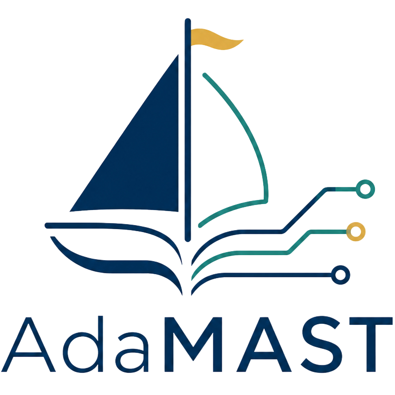

ICML 2026 FAGEN Workshop · Best Paper

Adaptive failure taxonomies
AdaMAST
Agents already generate the evidence of their own failures on every run. AdaMAST converts those traces into a compact taxonomy of named failure codes, induced automatically, validated before anything trusts them, and reused as feedback by search, runtime monitoring, and trajectory selection.
01 Observe 02 Correlate 03 Map 04 Decide
Papers
Blog
Jul 2026
AdaMAST: A Framework for Building Adaptive Failure Taxonomies to Improve LLM Agents
Feb 2026
Automating Algorithm Discovery: Improving Multi-Agent Reasoning Systems using MAST (Part 2)
Dec 2025
Why Do Enterprise Agents Fail? Insights from IT-Bench using MAST
Dec 2025
Automating Algorithm Discovery: Improving Multi-Agent System Design using MAST
Nov 2025
How to Use MAST to Improve Your Agents